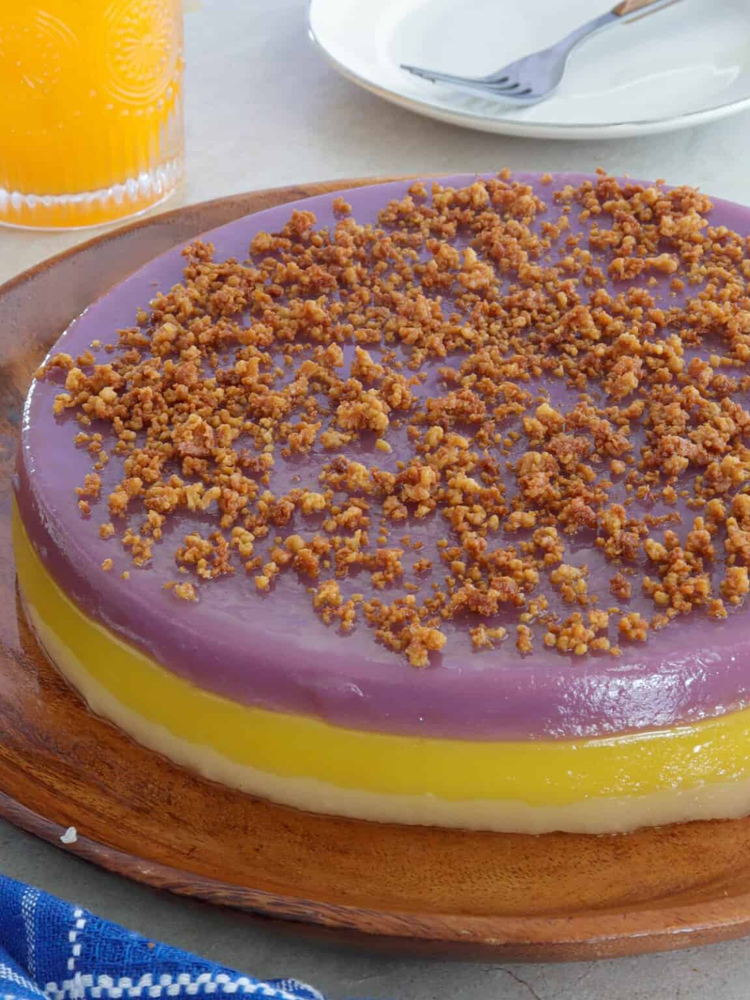

Sapin-Sapin

Description
Sapin-Sapin is as tasty as it is pretty! Soft, chewy, and topped with golden latik, this Filipino steamed glutinous rice cake is a delicious midday snack or after-dinner dessert.
Ingredients
- Coconut cream - also called kakang gata, is used to make the latik topping. As it's the first extraction from grated coconut and is thicker, richer, and creamier, it will reduce quicker.
- Glutinous rice flour - Locally known as malagkit. Also called sticky or sweet rice flour, it gives the dish its signature chewy texture. The steamed kalamay is traditionally made by soaking rice grains in water overnight to soften them and then grinding them into a thick batter or galapong mixture. Using rice flour makes the process so much easier.
- Coconut milk - adds a rich, creamy taste to the batter. You can use freshly pressed or canned for convenience.
- Condensed milk - a dense liquid made from cooking down milk to remove its water content. It adds sweetness and creaminess.
- Sugar - add more or less to adjust the level of sweetness to your liking
- Flavor extracts - the recipe uses ube and langka extracts to add color and flavor.
Prepare the pan
- The rice batter is about 6 cups which fits perfectly in an 8 x 2 round baking pan. You can also use an 8 x 8 square pan with an 8-cup capacity. Or a springform pan to make releasing the sticky rice cake easier.
- Liberally grease the inner sides and bottom of the baking pan to be able to remove the sticky rice cake easily after steaming. You can also use wilted banana leaves to line the pan or parchment paper.
Sapin-Sapin Cooking Steps
Sapin-Sapin, which means layers, is one of the easiest Filipino desserts you can make. It's so much fun watching everything come together into one colorful sweet treat! You'll be amazed at how something so gorgeous and delicious can be put together with minimal effort.
- Make the latik - drain the coconut curds well and store them separately from the coconut oil until ready to use. While you can use toasted coconut shreds instead, I urge you to make the extra effort. The latik taste so much better, and the rendered oil can be brushed on the sapin-sapin to add aroma and flavor.
- Make the batter - combine the glutinous rice flour, coconut milk, condensed milk, and sugar in a large bowl. Stir together until the sugar is dissolved and the mixture is smooth and well blended.
- Strain the batter- run into a fine-mesh sieve to remove any lumps and divide evenly into three bowls.
- Add the extracts - stir the ube in one bowl and the langka in another bowl until well dispersed, leaving the third portion plain and white. I use about 3 to 4 drops of each extract to achieve the color I like. Note that the colors of the tinted batters will be light but will deepen when steamed and cooked.
- Steam the batter - pour and steam each colored batter individually on top of each other until a toothpick inserted in the center comes out clean.
- Cool - remove the cake from the steamer and allow it to cool completely to make it easier to release from the pan. Run a knife around the sides of the pan to loosen the rice cake. Do not cover the kalamay until sufficiently cooled, as the steam will cause water puddles on the cake.
- Serve - carefully invert the pan on a wide platter and tap a few times to release the sapin-sapin onto the platter (the purple layer will now be the top layer). Liberally brush with coconut oil, sprinkle latik on top, and cut into serving portions.
Cooking Tip
To make the sapin-sapin extra special and more traditional, stir in about ½ cup of mashed cooked ube to the purple-colored mixture, ¼ cup of finely chopped jackfruit (langka) to the yellow-colored mixture, and ¼ cup chopped macapuno strips to the white mixture.